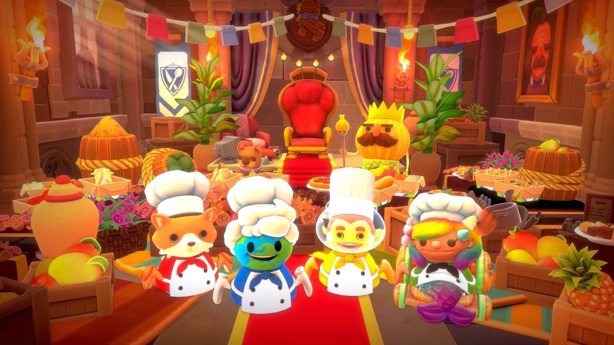

|
《Overcooked》是款混亂的一到四人合作烹飪遊戲。
|
|
洋蔥王國是個充滿了嚴酷異常廚房的富饒之地，等著你來征服。 踏上史詩旅程，在各式奇異廚房中完成逐漸困難的挑戰，將你的合作及協調技巧推向極限。 每個關卡都會帶給你跟你的隊伍全新的挑戰，可能是在海盜船上四處亂滑、在高速卡車上行動、在浮冰上烹飪，甚至是在烈焰熊熊的地底世界中上菜都有可能，每個關卡都是在考驗最勇敢主廚的膽量。 |
《Overcooked》讓大家都能立刻上手並一起同樂，但要能在一切亂成一團時還能繼續合作及協調隊伍可不容易，只有做好準備的神廚小隊能站上巔峰！
|
不管是火熱的多人模式還是慢熟的單人遊戲，隨著遊戲的進行將會解開新關卡、新主廚，甚至還有挑戰關卡能讓你在廚房進行二對二的沸騰對決。 |
 |
ⓒ TEAM 17